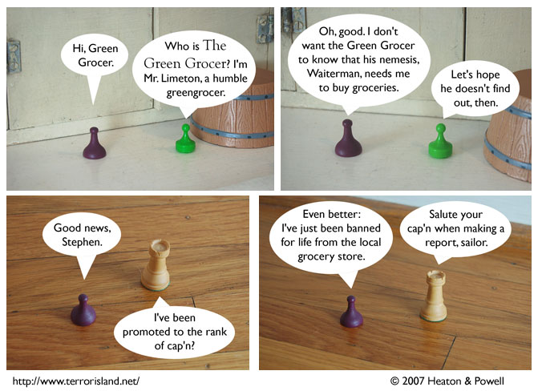

Strip #192
— Labor Day, 2007
Immediately after panel 2, both Sid and the Green Grocer began cackling evilly.
Notes, Thoughts, &c.
Ben’s Notes
The Green Grocer is wise to protect his secret identity here, since for all he knew, Sid might have forgotten about the time he announced it.
Since the last update, I’ve gotten some very nice supportive comments from readers, which have helped cheer me up. You guys are awesome. Thanks, and have a happy Labor Day.
Lewis’s Notes
Do you know about Mangos? They are good. Unlike Kiwi fruit.
At one point during scripting, Stephen’s line in panel 3 was just written as “[wacky guess].” While Ben was taking photos, I generated a large list of potential wacky guesses. Here is that list, so that you may ponder how else this strip might have gone.
- They discovered that P=NP?
- York decided to produce my ‘Communopoly’ game idea?
- You verified that we in fact have qualia?
- They decided to have two arbor days this year?
- Marmaduke sat on people furniture again?
- It turns out aerosol is good for the environment?
- I’m descended from Sherlock Holmes?
- We’re switching to a laughter-based economy?
- My high school crush finally realized that she should have said yes when I asked her out?
- European restaurants started giving free refills on soda?
- They replaced sales tax with shoulder massage?